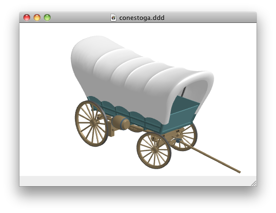

The ObjectLoader module
Description
Using the ObjectLoader module, you can import 3D models exported from many popular 3D software packages.
Supported formats include:
- OBJ (*.obj)
- 3DS (*.3ds)
- Collada V1.4 (*.dae)
- 3DXML ASCII V3 and V4 (*.3dxml)
- STL (ASCII and binary) (*.stl)
- OFF and COFF (*.off)
Usage
To use the module, add the following import to your document:
import ObjectLoader "0.2"
Example
The following Tao document will load a 3D model from file conestoga.3ds, and show it rotating around the z axis.
import ObjectLoader "0.2"
the_light x, y, z ->
light 0
light_ambient 0.4, 0.4, 0.4, 1.0
light_diffuse 0.4, 0.4, 0.4, 1.0
light_specular 0.8, 0.8, 0.8, 1.0
light_attenuation 1.0, 0.0, 0.0
light_position x, y, z
rotating_obj f ->
locally
rotatex -70
rotatez 8 * time
object 0, 0, 0, 400, 400, 400, f
the_light 300, 300, 300
rotating_obj "conestoga.3ds"
Here is a screen capture:

(3D model by Helmut Schaub — http://www.3dxtra.net, http://www.3d-xtra.bravepages.com)